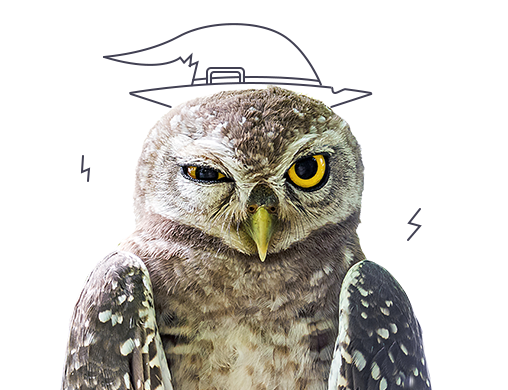
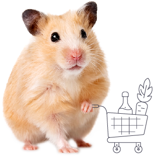

Коты
Кошек можно назвать, пожалуй, самыми загадочными домашними животными. Грациозные и независимые, они, между тем, ассоциируются у нас с теплом и уютом, когда лежат свернувшись клубком на диване или возле камина. И несмотря на то, что кошки с трудом поддаются дрессировке и чаще всего живут у нас уже не для охоты за мышами, они все равно остаются одними из самых популярных питомцев. Всего около 80 пород кошек. Также они имеют огромное разнообразие расцветок:
- Одноцветные
- Дымчатые
- Завуалированные
- Затушеванные
- Шиншиловые
- Табби
- Колор-поинт
- Черепаховые
- Вариации с белым и др.
Кошки — хищники, питаются мясом и рыбой. Домашние кошки иногда пьют молоко, а ещё реже (если сильно голодны) могут есть и хлеб. Некоторые кошки охотно едят овощи и листья растений. Котики в среднем живут 14—18 лет. При очень хороших условиях они могут дожить и до 20.
Собаки
Собаки – одни из самых преданных человеку существ. Эти животные помогают людям практически во всех сферах деятельности и часто бывают самыми верными и понимающими друзьями. Цените и берегите собак, которые всегда рядом. Насчитывается 155 пород собак. Они питаются мясом, рыбой, овощами и зеленью, можно варить каши из крупы. Посмотрим, какие бывают окрасы собачек:
- Сплошной
- Смешанный
- Модифицированный
- Подпалый
- Зонарный или волчий
- Чепрачный
- Соболиный
- Тигровый
- Муругий и др.
В среднем собаки живут 10-13 лет, но это строго среднее значение, потому что на продолжительность жизни вляет множество факторов.
Птицы
Птицы – символы полета, вдохновения и свободы. С древних времен они содержались в домах богачей и привилегированных особ, привлекая людей своим пением и красотой. Сегодня птицы все так же популярны в качестве домашних питомцев, особенно в квартирах, где так приятно слушать лесного певца или наблюдать за тропическим ярким летуном. Количество пород птичек начисляет 153 штуки.
Обычно в домах и квартирах заводят небольших птиц, но бывают и любители больших пернатых друзей! Список домашних птиц, которых заводят чаще всего:
- Волнистые попугаи
- Соловьи
- Канарейки
- Щеглы
- Зяблики
- Кореллы
- Чижи
- Аратинги
- Африканские серые попугаи
Основу питания домашних птиц в любом хозяйстве, как в приусадебном, так и в крупномасштабном составляет зерно и его производные – комбикорма, мука, крупы. Потребляют птицы свежие овощи, листья деревьев и кустарников, травы, ягоды, плоды растений, червей, насекомых, остатки с кухонного стола, в том числе и мясо, а также минеральные вещества в виде мела, костной муки и даже песка.
Грызуны
Грызуны – милые пушистые комочки, которых нередко заводят в качестве домашних питомцев для детей. Безобидные, забавные и милые зверьки, которые не требуют много времени и сил на уход, но дарят порой не меньше радости, чем собаки и кошки. Количество пород: 30
Каких грызунов чаще всего держат дома?
- Джунгарский хомячок
- Декоративные крысы
- Морская свинка
- Шиншилы
- Кролики
- Мыши
- Песчанки
Аквариумные рыбки
Загадочные и таинственные, рыбки всегда восхищали и поражали воображение. Им подвластна чуждая нам среда… Они привлекают и увлекают. Рыбы могут похвастаться бесчисленным множеством причудливых форм и разнообразных окрасок. К тому же они доступны почти каждому, кто хочет иметь у себя дома «кусочек природы» в аквариуме. На сегодняшний день насчитывается 93 породы рыбок.
Самыми популярными аквариумными рыбками являются:
- Золотая рыбка
- Гуппи
- Скалярия
- Меченосцы
- Дискус
- Тернеция
- Лялиус
- Крапчатый сомик
Обычно рыбки питаются специальными кормами, но также их можно подкармливать насекомыми, личинками, мелкими рачками, червями и прочими беспозвоночными. Если вы захотите себе рыбку, то мало будет просто купить её. Чтобы обеспечить рыбке комфорт нужно купить аквариум, который будет оборудован следующими предметами: фильтр, грунт, кормушка, освещение, обогреватель, термометр, декор, сачок, сифон, губки и так далее.